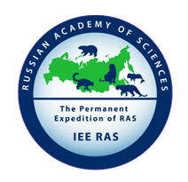
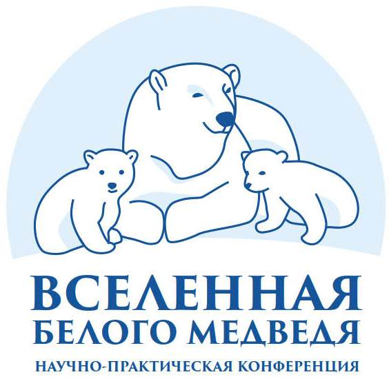
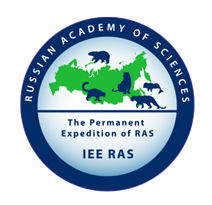
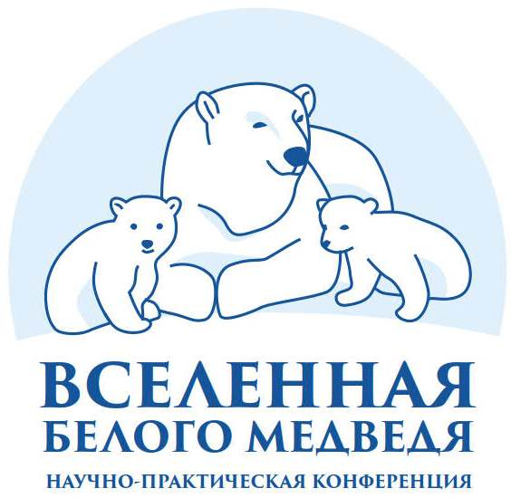
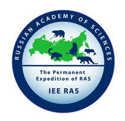
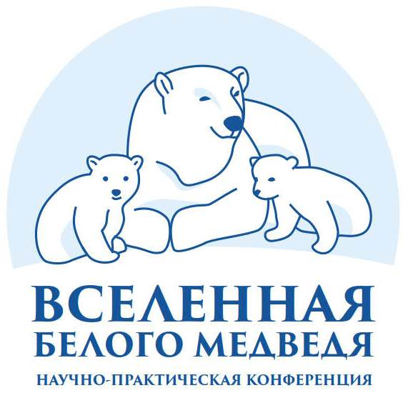
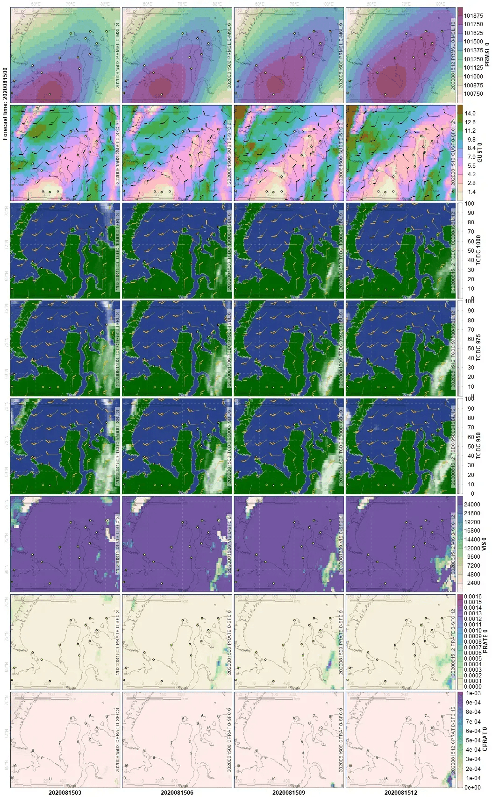
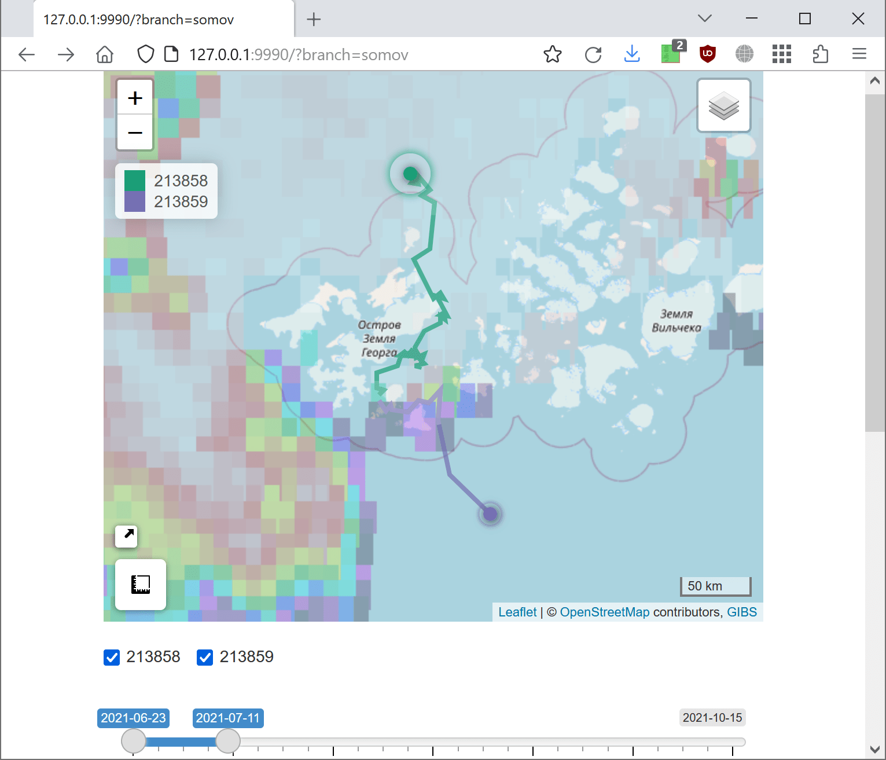
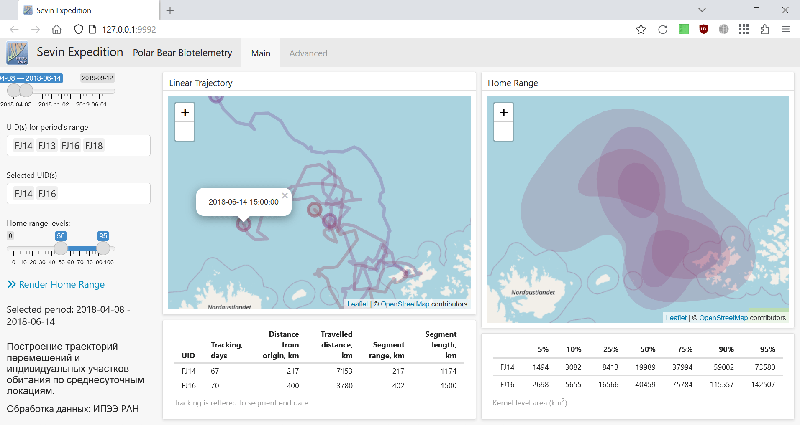
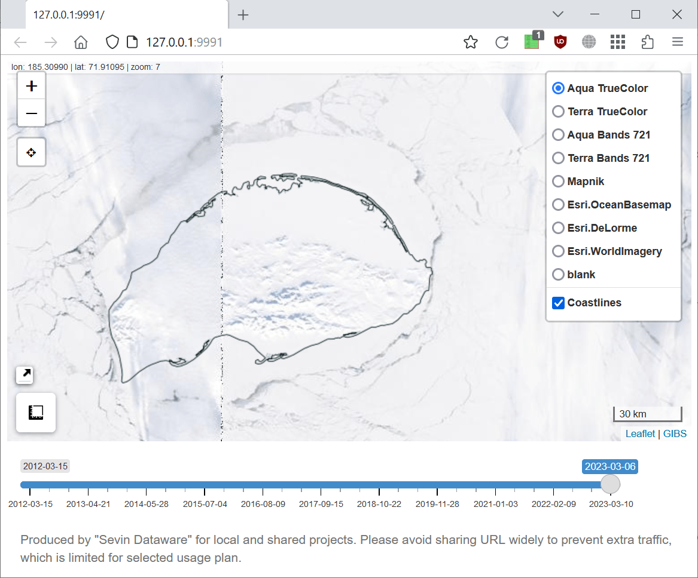

Performed by the Permanent Expedition of Russian Academy of Sciences
Comprehensive polar bear study:
Estimating spatial-temporal distribution of polar bears
Evaluating polar bear movement patterns and habitat use parameters in the different temporal resolutions using satellite biotelemetry
Studying polar bear reproductive biology
Investigating feeding, provision by food resources, the dynamics of primary preys of polar bear
Detection natural and human-induced factors, which influence to polar bear reproduction and survival
Genetic identification of polar bears
Studying of intra-annual and inter-annual variability of sea ice and other habitat parameters
Цель: комплексное изучение белого медведя как вида
Изучение пространственно-временного размещения животных в зависимости от факторов окружающей среды.
Оценка перемещений белого медведя и характера использования им местообитаний.
Изучение репродуктивной биологии белого медведя.
Изучение половозрастной структуры и демографических показателей популяций.
Изучение питания, кормовых ресурсов, распределения и динамики основных видов жертв белого медведя.
Изучение взаимоотношений белого медведя с другими видами животных и человеком.
Изучение роли природных и антропогенных факторов в динамике численности с особым вниманием к последствиям воздействия на популяции загрязняющих веществ, патогенных организмов и изменения климата.
Уточнение популяционной структуры географических популяций белого медведя с применением молекулярно-генетического и других современных методов анализа.
Изучение сезонной и межгодовой динамики ледовых местообитаний
Issues:
Data traffic is limited by volume and speed, with interrupted sessions
Data are required to be near real-time.
Solutions:
Tasks by schedule or requests on server, located with favorable traffic conditions. Output is text summary or lightweight figures.
Scripts for automatic data download during low traffic periods of sleeping or outdoor activity.
API usage instead of interactive and multi-step browser requests.
Argos satellite biotelemetry data – SOAP requests, with additional profit in uniform date format.
Web map services (WMS) and tile map services (TMS) – data volume is defined by screen resolution
Emergency assistance – voice or messages via Iridium satellite phones
Проблема:
Ограничения объема и скорости передачи данных, нередки обрывы
Необходимость получения данных в реальном времени
Применяемые решения:
Получение и обработке данных «хостом» (сервер или человек), на выходе сводка и легковесные картинки.
Скрипты для автоматического получения данных ночью или во время «выезда в поле»
Использование API вместо интерактивных запросов в браузере
Спутниковая биотелеметрия Argos (SOAP) – стандартизация разделителей и формата данных
Картографические интернет сервисы TMS и WMS – разрешение данных по размеру экрана
«Помощь друга» – голосовая спутниковая связь
Sentinel-1 active microwave data
Scene S1B_EW_GRDM_1SDH_20210419T042651_20210…1 (~200 МB)
Visual control for landfast ice continuity
Required figure/image size is 100-200 KB
Raw GFS atmosphere data in GRIB format: sea level pressure, cloud fraction and wind on geopotential height levels (aerial survey), horizontal visibility, precipitation rates, etc.

Данные GFS по атмосферной циркуляции: давление на уровне моря, фракция облачности и ветер по уровням геопотенциальных высот, горизонтальная видимость, осадки и др.
Sea level pressure
Wind gusts at surface level
Total cloud fraction and wind at level 1000 mbar
Total cloud fraction and wind at level 950 mbar
Visibility at surface level
Precipitation rate at surface level
Convective precipitation rate at surface level and air temperature at level 2m above ground
Code (program):
converts raw data to processed data
does data analysis
implements literate programming
gets results for a new data set
Implementation: input  code,
integrated to extended
(Rmarkdown
code,
integrated to extended
(Rmarkdown  )
markup language Markdown
)
markup language Markdown  ,
is converted by
tool to formatted documents in various formats.
,
is converted by
tool to formatted documents in various formats.
Collaboration: web applications

Server avoids software (IDEs, GIS) installing
Client (GUI) avoids coding
Программный код
преобразует необработанные данные в обработанные данные
выполняет анализ данных
включает результаты анализа в отчет
позволяет получить результат на новом наборе данных
Реализация: язык программирования R, внедренный в язык текстовой разметки markdown (Rmarkdown), преобразуется утилитой Pandoc в документы различных форматов.
Популяризация: веб-приложения Shiny
Не нужно устанавливать программное обеспечение (ГИС, IDE)
Графическая оболочка скрывает программирование

Movement analysis, home range

Sea ice, snow cover, vegetation growth using MODIS data

Permanent Expedition of Russian Academy of Sciences
«The Program For Polar Bear Researches In The Russian Arctic»: Viatcheslav Rozhnov (supervisor), Ilia Mordvintsev (expeditional leader), Eugeniy Ivanov, Sergey Naidenko, Nikita Platonov
Programs and projects for marine mammals studies
Collaboration, co-organization
National park «Russian Arctic»
National park «Lenskie Stolby», Institute of Biological Problems of the Cryoliptozone (Siberian branch of Russian Academy of Sciences)
Sergey Kavry, Anatoly Kochnev
Support
The Arctic Research Center LLC, the scientific institute of PJSC NK Rosneft
“Study of Rare Animal Species” project of the Russian Geographical Society
“Master of the Arctic-2021” project of the International Environmental Foundation “Clean Seas”
Chukotka Arctic Research Center
Участники Постоянно действующей экспедиции РАН
Соучастники, соорганизаторы
НП «Русская Арктика»
НП «Ленские Столбы», ИБПК СО РАН
Российский центр освоения Арктики
Поддержка
НК «Чукотский арктический научный центр»
Русское географическое общество
ООО «Арктический Научный Центр» – научный институт ПАО «НК «Роснефть»
S1B_EW_GRDM_1SDH_20210419T042651_20210419T042751_026531_032B0C_C096↩︎